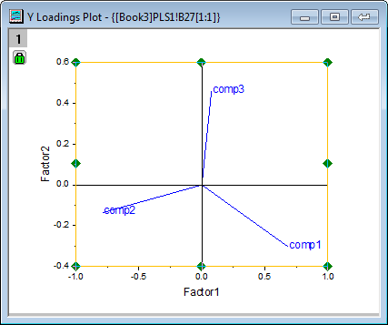

Partielle kleinste Quadrate (PLS)
Partial-Least-Squares
Zusammenfassung
Die Partiellen Kleinsten Quadrate (PLS) stellen eine Methode zum Erzeugen von prädiktiven Modellen dar, wenn es viele stark kollineare Faktoren gibt.
Dieses Tutorial beginnt mit den Spektrumsdaten von einigen Stichproben, um die Menge von drei vorhandenen Bindungen zu bestimmen. Die Daten umfassen:
- Daten der Spektrumsemissionsintensitäten bei verschiedenen Wellenlängen (v1 - v43)
- Menge der drei Bindungen in der Stichprobe (comp1, comp2, comp3)
Dieses Tutorial erzeugt ein Modell, mit dem Sie die Menge der drei Bindungen von v1 - v43 bestimmen können.
Origin-Version mind. erforderlich: Origin 2016 SR0
Regression mit den partiellen kleinsten Quadraten
- Öffnen Sie ein neues Projekt oder eine neue Arbeitsmappe. Importieren Sie die Datendatei \Samples\Statistics\MixtureSpectra.dat
- Markieren Sie die Spalten B bis C42.
- Wählen Sie Statistik: Multivariate Analyse: Partielle kleinste Quadrate. Der Dialog pls wird auf der Registerkarte Eingabedaten geöffnet.
- Die markierten Spalten werden automatisch als unabhängige Variablen hinzugefügt. Klicken Sie auf die dreieckige Schaltfläche
 neben Unabhängige Variablen und dann auf Spalten wählen im Kontextmenü.
neben Unabhängige Variablen und dann auf Spalten wählen im Kontextmenü.
- Stellen Sie sicher, dass das untere Bedienfeld angezeigt wird, indem Sie auf die Schaltfläche mit den zwei Pfeilen unten rechts im Dialog Spaltenbrowser klicken.
- Klicken Sie im unteren Bedienfeld auf die Schaltfläche .... Der Dialog Bereich wird geöffnet. Deaktivieren Sie das Kontrollkästchen Gesamte Spalte(n) und legen Sie den Datenbereich von 1 bis 20 fest. Klicken Sie auf OK und klicken Sie dann auf OK, um den Spaltenbrowser zu schließen.
- Klicken Sie auf die interaktive Schaltfläche
 rechts neben Abhängige Variablen. Wechseln Sie zurück zum Arbeitsblatt, markieren Sie Spalte C43 und ziehen Sie Ihre Maus bis Spalte C45. Klicken Sie erneut auf die interaktive Schaltfläche, um den Dialog wiederherzustellen.
rechts neben Abhängige Variablen. Wechseln Sie zurück zum Arbeitsblatt, markieren Sie Spalte C43 und ziehen Sie Ihre Maus bis Spalte C45. Klicken Sie erneut auf die interaktive Schaltfläche, um den Dialog wiederherzustellen.
- Da v1 bis v43 Absorption sind, besteht keine Notwendigkeit, sie zu standardisieren. Klicken Sie auf die Registerkarte Einstellungen, setzen Sie Methode auf SVD und deaktivieren Sie das Kontrollkästchen Skalierungsvariablen.
- Aktivieren Sie das Kontrollkästchen Kreuzvalidierung. Dies hilft dabei, die optimale Anzahl von Faktoren in dem Modell zu finden.
- Klicken Sie auf die Registerkarte Zeichnungen und erweitern Sie den Zweig Komponentenzeichnung. Aktivieren Sie die folgenden Kontrollkästchen und klicken Sie auf OK.
- Wichtigskeitsdiagramm für Variablen
- X-Ladungsdiagramm
- Y-Ladungsdiagramm
- X-Scorediagramm
- Y-Scorediagramm
- Diagnostikzeichnungen
-
Modell entwickeln
Gehen Sie in der Arbeitsmappe auf den Reiter des Blatts PLS1:
- Die Tabelle Kreuzvalidierung zeigt die optimale Anzahl von zu extrahierenden Faktoren. PRESS ist die prognostizierte Summe der Fehlerquadrate des Modells. Das Modell mit dem minimalen quadratischen Mittel PRESS besitzt die optimale Anzahl von Faktoren:
- Die Diagnostikzeichnungen sind Residuendiagrammen von Y und X, die dazu verwendet werden können, die Qualität eines Modell zu bewerten. Im Allgemeinen kann festgehalten werden, dass das angepasste Modell gut ist, weil:
- Layer 1 - Das Diagramm der prognostizierten Werte-tatsächlichen Werte weist darauf hin, dass das Modell für die erste Komponente gut angepasst wird.
- Layer 2 - In dem Diagramm prognostizierte Werte-Residuum sind die Residuen zufällig um Null verteilt. Dies weist darauf hin, dass es keinen Drift in dem Prozess gibt.
- Layer 4 - Das P-P-Diagramm der Residuen kann verwendet werden, um zu prüfen, ob die Varianz normalverteilt ist. Das Ergebnis fällt fast auf eine Linie, was bedeutet, dass die Varianz normalverteilt ist.

- Eine Zusammenfassung der Wichtigkeit von v1~v43 wird von dem VIP-Diagramm zur Verfügung gestellt. Wenn die Variable kleine Regressionskoeffizienten hat und geringe VIP-Werte, können Sie in Betracht ziehen, diese aus dem Modell auszuschließen. Zum Beispiel:
- VIP-Werte von v41 ~ v43 in der Zeichnung unten sind gering:
- Koeffizienten von v41 ~ v43 sind auch klein in den drei Koeffizienten unten:
- Wenn es jedoch, wie in Schritt 2, so aussieht, als würde das Modell gut angepasst, dann ist es akzeptabel, diese weniger wichtigen Variablen zu behalten.
Ergebnisse interpretieren
- Die Tabelle Varianz erläutert führt die Erklärung für jeden Faktor des Anteils der Varianz auf. In dem Beispiel erklärt Faktor 1 71,36% der Varianz für den X-Effekt und 75,6% der Varianz für den Y-Effekt. Faktor 2 erklärt 23,99% der Varianz für den X-Effekt und 22,14% der Varianz für den Y-Effekt. Das Diagramm zur Erklärung der Varianz weist darauf hin, dass Sie den ersten beiden Faktoren eine größere Aufmerksamkeit schenken sollten, da diese beiden mehr als 95% der Varianz für X- und Y-Effekte erklärten.
- Das Ladungsdiagramm macht die Beziehungen zwischen den X- und Y-Variablen im Raum der ersten beiden Faktoren deutlich.
- Aus dem Y-Ladungsdiagramm können Sie ersehen, dass drei Bindungen eine unterschiedliche Ladung für Faktor 1 und Faktor 2 haben.
- 
- Aus dem X-Ladungsdiagramm ist ersichtlich, dass v26 ~ v38 ähnlich schwere Ladungen für Faktor 2 haben und v17, v18, v19, v23 und v24 alle ähnlich leichte Ladungen für Faktor 1 und Faktor 2 besitzen.
| Hinweise: Um die Zeichnung im Einzelnen zu untersuchen, können Sie doppelt darauf klicken. Das Diagrammfenster mit dem Ladungsdiagramm wird geöffnet und lässt sich mit dem Hilfsmittel Achsenskalierung vergrößern zoomen. |
Modell für die Prognose verwenden
Nachdem das Modell erzeugt ist, können Sie die Mengen der drei Verbindungen in den neuen Stichproben aus ihren Spektrumsemissionsintensitäten bei verschiedenen Wellenlängen vorhersagen:
- Klicken Sie auf das grüne Schloss auf dem Blatt PLS1 und wählen Sie im Kontextmenü Parameter ändern.
- Klicken Sie in dem sich öffnenden Dialog auf die Registerkarte Eingabe und aktivieren Sie das Kontrollkästchen Antworten prognostizieren.
- Klicken Sie auf die interaktive Schaltfläche rechts von Unabhängige Variablen für die Prognose. Kehren Sie zu der Arbeitsmappe zurück und wählen Sie das Blatt MixtureSpectra. Markieren Sie Spalte B bis C42. Klicken Sie erneut auf die interaktive Schaltfläche, um den Dialog wiederherzustellen.
- Klicken Sie auf die dreieckige Schaltfläche neben Unabhängige Variablen für die Prognose und klicken Sie dann auf Spalten wählen im Kontextmenü.
- Klicken Sie im unteren Bedienfeld des Dialogs Spaltenbrowser auf die Schaltfläche .... Deaktivieren Sie das Kontrollkästchen Gesamte Spalte(n) und legen Sie den Datenbereich von 21 bis 25 fest. Klicken Sie auf OK, um den Dialog Bereich und den Spaltenbrowser zu schließen.
- Klicken Sie auf OK, um die Einstellungen anzuwenden und den Dialog zu schließen.
- Das Blatt PLSResults1 enthält jetzt die prognostizierten Mengen der drei Bindungen in den fünf neuen Stichproben: